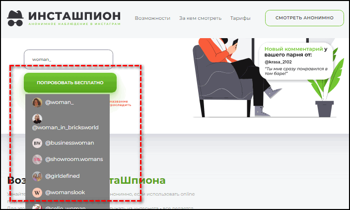
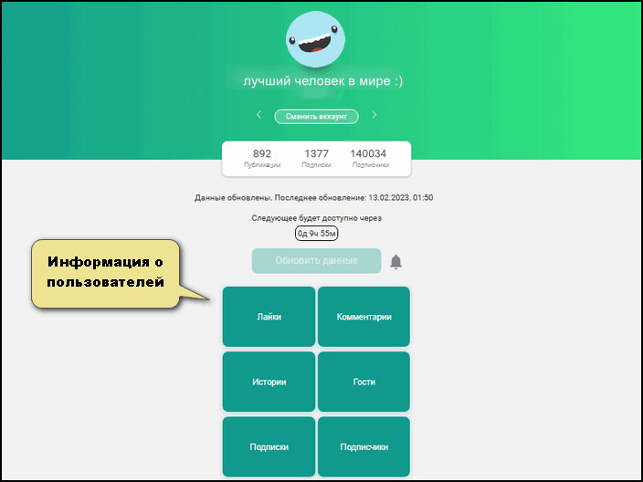
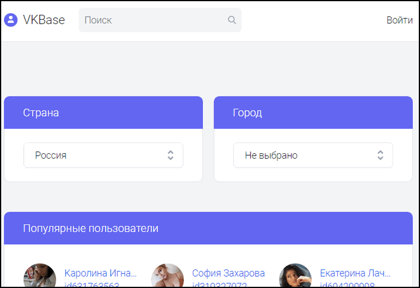
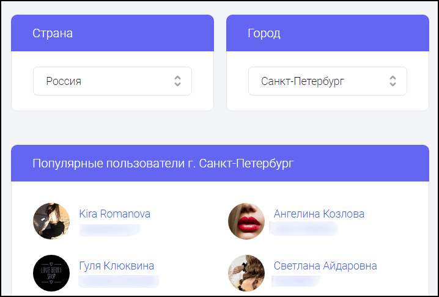
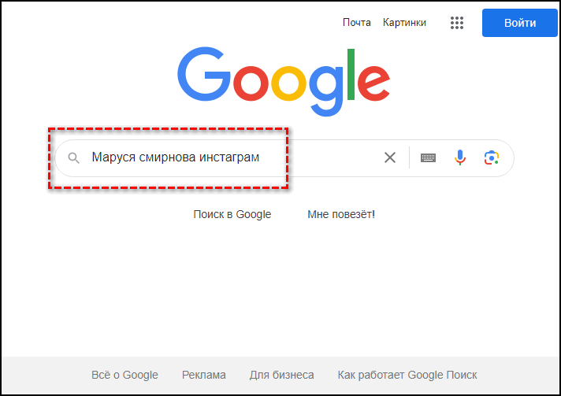
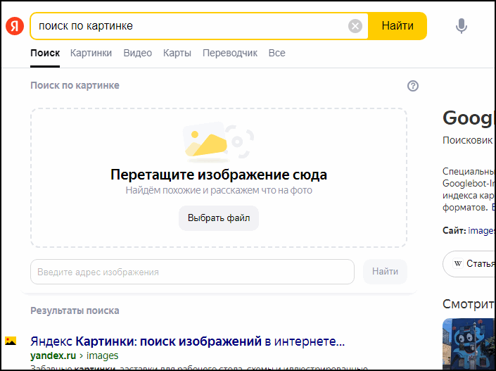
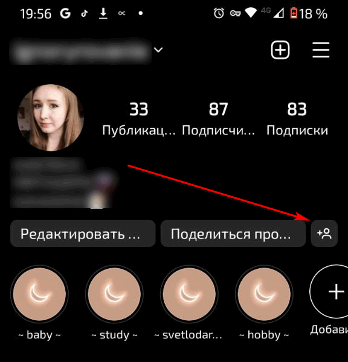
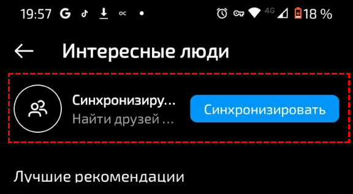

Как пробить Инстаграм по телефону, нику или ссылке

Пробить Инстаграм* человека без привлечения специалистов – вполне реально. Достаточно немного свободного времени, обычных навыков пользования поисковыми системами и терпения.
Что нужно для поиска человека в Инстаграме*
Пробить закрытый аккаунт в Инстаграме* или открытый возможно через поисковые системы, другие социальные сети и онлайн-сервисы. Данные, которые могут понадобиться:
- имя, фамилия и город проживания. Даже если человек переехал;
- знать страницы в других социальных сетях. Или отыскать их по персональным данным;
- никнейм. Если поиск будет выполнен в Инстаграме*.
Чтобы отыскать чужую страницу, нужно посмотреть по аккаунтам близких или друзей. Искомый человек чаще всего есть в списке подписчиков или подписок. Пробить Инстаграм* по нику несложно, если человек использовал фамилию в качестве наименования. Так как в социальной сети только английский язык, то стоит попробовать написание фамилии латиницей.
№1 Instashpion: смотрим Сторис и комментарии
С помощью сервиса ИнстаШпион можно посмотреть страницу человека: открыть Историю, прейти к комментариям и обнаружить гостей. Но способ сработает в том случае, если известен никнейм пользователя. Как пробить Инстаграм* по нику через Инсташпиона:
- Зайти в сервис – перейти к пустому полю для ввода.

- Написать ник – посмотреть предложенные аккаунты.

- Выбрать нужный – подождать, пока загрузится информация о пользователе.
В функции Инсташпиона входит:
- анонимный просмотр Историй и Актуального;
- информация о гостях и посетителях страницы;
- о комментариях и лайках: полученных и отправленных.
В сервис Instashpion можно подключить до пяти аккаунтов и регулярно обновлять информацию. Данные другого человека обновляются ежедневно, поэтому можно получать новые сведения и уведомления о том, что какой-то из разделов обновлен.
№2 Ищем Инстаграм* через другие соц.сети
Пробить Инстаграм* по ссылке из других социальных сетей проще всего. Это может быть учетная запись в Одноклассниках, Вконтакте или Тик Токе. Если неизвестны другие страницы, то можно воспользоваться сайтом VKBase, чтобы найти человека через ВК:
- Зайти на сайт – ввести в строке поиска имя и фамилию нужного человека.
- Выбрать город и предполагаемый возраст.

- Посмотреть предложенные страницы – скопировать ссылку и зайти к пользователю на аккаунт в Вконтакте.

- Поискать упоминания об Инстаграме*.
Даже, если у искомого человека нет ссылки на Instagram*, можно самостоятельно провести небольшое расследование:
- Найти человека, с которым владелец страницы чаще всего переписывается в комментариях: друг или подруга.
- Найти Инстаграм* этого человека – перейти к подпискам и отыскать того, кто изначально был нужен.
Вариант с поиском человека через его знакомых –зачастую срабатывает, даже если искомая личность поменяла фамилию, место проживания.
№3 Поиск в Яндексе и Google
Если в Яндексе, в силу ограничений Инстаграма* на территории РФ, можно найти только упоминания, то в поисковой системе Google появится аккаунт. Правильно искать аккаунт с помощью Гугл:
- Перейти к поисковой системе – ввести имя и фамилию нужного человека.

- Добавить к запросу «Инстаграм*» - начать поиск.
Если стандартный поиск не дал результата – стоит заглянуть в раздел «Картинки». Туда не редко попадают фотографии со страниц пользователей со ссылкой на социальные сети, откуда был перенесен снимок. С помощью Яндекса можно сделать то же самое: ввести название социальной сети в конце запросы и перейти к изображениям. Или воспользоваться функцией на смартфоне: «Поиск по картинке»:
- Зайти в Яндекс Браузер – вписать в поисковик «Поиск по картинке».
- Перейти в сервис – загрузить фотографию человека, которого нужно найти.

- Через «Похожие публикации» и ответы поискать аккаунт.
Поиск по картинке зачастую неточен, потому что пользователю показывают похожие изображения. У сервиса нет доступа к закрытым аккаунтам, поэтому профиль нужного человека может не появиться.
№4 Ищем по никнейму и номеру
Пробить Инстаграм* по телефону можно в том случае, если номер добавлен в список контактов. Социальная сеть будет рекомендовать страницы тех, кто есть в телефонной книге и предлагать на них подписаться. Добавить или найти тех, кто записан в контактах:
- Открыть свой профиль – рядом с кнопкой «Поделиться профилем» нажать по значку в виде человека.

- Появится список рекомендуемых пользователей и сверху кнопка: «Подключить список контактов».

Пользователь должен дать согласие на обработку данных. Далее появится перечень тех, кого можно добавить в товарищи. Не получится, если владелец страницы менял номер или привязал к другому телефону. Если пробить Инстаграм* по номеру не получилось – стоит попробовать поискать человека через никнейм:
- Нажать по кнопке: «Интересное» - в строку поиска сверху ввести никнейм.
- Посмотреть аккаунты тех, кто появился.
Искомый пользователь может указать имя и фамилию в аккаунте, поэтому вариант с поиском по личным данным также актуален. Чтобы отсортировать публикации от страниц людей, нужно в поиске переключиться на раздел «Люди».
Почему не получается найти человека
Есть несколько причин, почему отыскать человека не получается:
- человек указал ненастоящие данные: выдуманную фамилию и имя;
- не зарегистрирован в Инстаграм*;
- пользователь неверно указывает информацию о человеке;
- неправильно написан никнейм: нижнее подчеркивание, цифры и другие особенности, которые могут мешать поиску.
Надежный способ, как найти другого человека и не ошибиться – посмотреть через страницы друзей и знакомых. И как только ник станет известен, можно воспользоваться Инсташпионом, чтобы посмотреть всю информацию, включая Истории и Актуальное.
Дополнительной причиной, почему не выходит отыскать человека, являются: закрытый аккаунт и настройки конфиденциальности, которые запрещают показ страницы в поисковиках. Посмотреть приватный профиль без подписки не получится обычным способом, но есть несколько вариантов, как получить доступ к постам и Историям и следить за нужным человеком.